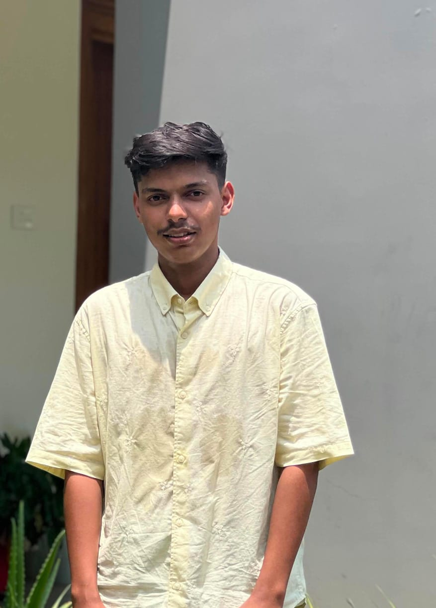

a second-year BTech Computer Science Engineering student at KMCT IEM Perinthalmanna, affiliated with APJ Abdul Kalam Technological University (KTU).
I'm someone who genuinely loves technology — not just as a subject, but as a tool to build, create, and solve real problems. My journey in tech started with the fundamentals — understanding how computers think through C programming, exploring how data is structured and managed through Data Structures and Algorithms, and bringing ideas to life visually through Web Development using HTML, CSS, and JavaScript. Every line of code I write brings me one step closer to becoming the developer I aspire to be. I'm passionate about building things — whether it's crafting a clean, responsive web application or cracking a challenging logic problem through code. I believe that the best way to learn is by doing, which is why I'm always working on personal projects, experimenting with new technologies. Beyond coding, I'm a curious mind who enjoys exploring how technology is shaping the world around us. I'm currently focused on strengthening my DSA skills and diving deeper into programming. I may be early in my journey, but I bring enthusiasm, consistency, and a strong willingness to learn. I'm always open to new opportunities, collaborations, and challenges that help me grow — both as a developer and as a person.